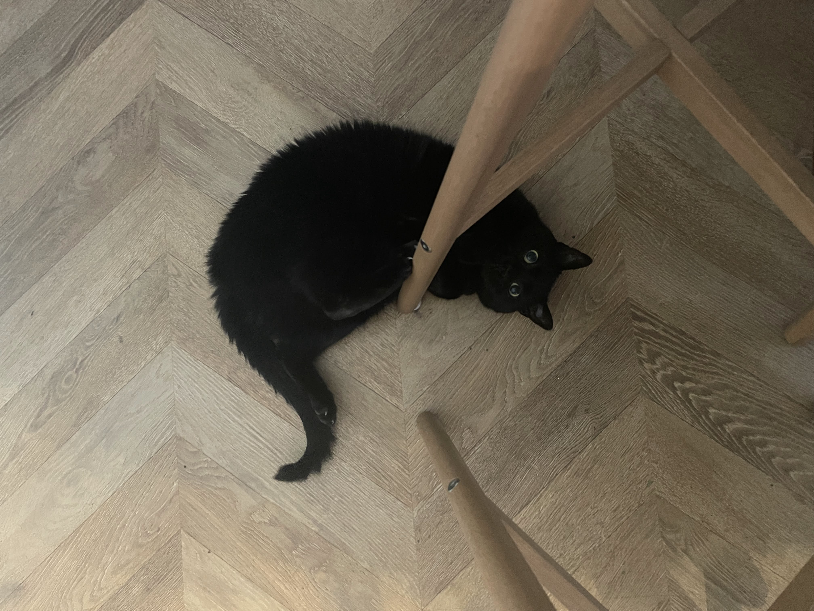
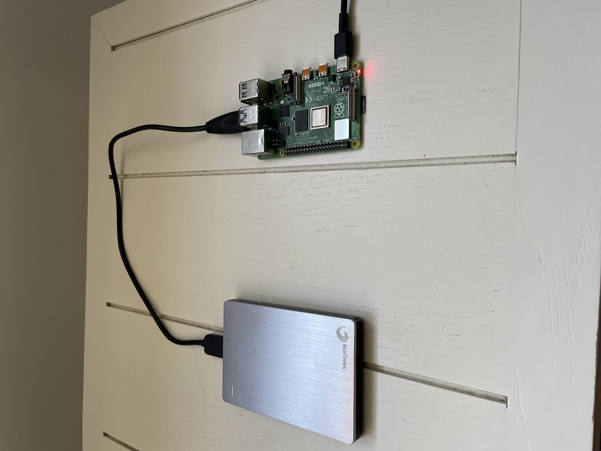

Hello and welcome to my personal website. I am a software engineer with 10 years of professional experience. Web development is (obviously) not my strong suit, but if you take a look at my other personal websites, you'll see that I do in fact what CSS is. I have actually done a fair bit of full-stack web development, mostly with react and assorted backend technologies, and while it's not my specialty, or even something I particularly like to do, I hope the sites linked below demonstrate that I do know how to some simple web development. My professional specialties do include network engineering, data engineering, site reliability engineering, and devops. I have spent the last 5 years of my career working at Cloudflare, where I did a bit of all of the above. For more details, see my resume.
Here are the links to my other (more interesting) personal websites:
| Bolas |
| Hashbash |
| Stupidchess |
This page is deployed using Cloudflare Pages. The other sites listed above have backend components, and they are deployed on a Raspberry Pi running in my house. If you see an "Argo Tunnel Error" page for any of those sites, then either I am not currently looking for a job and I don't feel like wasting the power to keep these sites that nobody ever uses online, or my cat knocked the raspberry pi off the table again. This is my cat:
Her name is Echo.
Here's a picture of the raspberry pi running those websites:
I run Ubuntu Server on this raspberry pi, and I deploy and configure the databases, web servers, prometheus, grafana, etc using Salt. The salt configurations can be found here.
Anyways, hire me.